– portfolio –
Click here to download the PDF
Digital Jacquard
Centre Pompidou Metz
2023
Installation interactive
“Le travail de Bérénice Courtin prend comme point de départ l’étude de la machine électromécanique utilisée par son grand-père résistant polonais Kazimierz Gaca, pour chiffrer et déchiffrer des informations. Dans sa pratique artistique, elle compare l’utilisation de cette machine au métier à tisser dans lequel elle insère des codes informatiques. À travers une installation sous forme de métier à tisser collectif, le public est invité à participer à ce dialogue entre artisanat et ère digitale. Il peut interagir avec des personnages modélisés en 3D et des symboles qui sont projetés après manipulation dans un dialogue entre la matière et le numérique. Le tissage permet ainsi d’établir une forme de langage où cohabitent la structure et la symbolique grâce à l’élaboration de motifs pixelisés.” Installation dans la Capsule du Centre Pompidou de Metz 16. SEPT. au 17. DEC. 2023 en partenariat avec Octobre Numérique en lien avec l’exposition Worldbuilding, Jeux vidéo et art à l‘ère digitale curatée par Hans Ulrich Obrist Merci à Anne-Marine Guiberteau et Elsa De Smet Collaborations avec La Réserve des Arts, Bermuda Ateliers, Recyclerie Caritas, Playtronica Avec Louis Dambrain, Sara Bissen, Dora Sayari, Ornella Pizzi.
 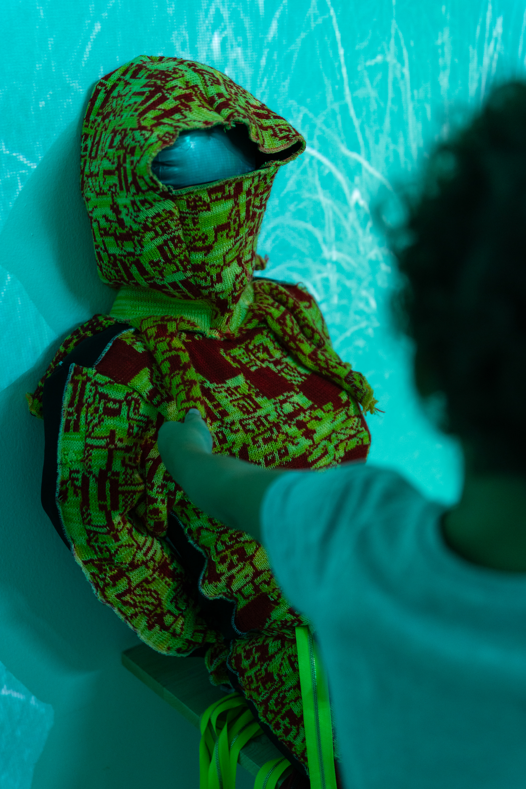
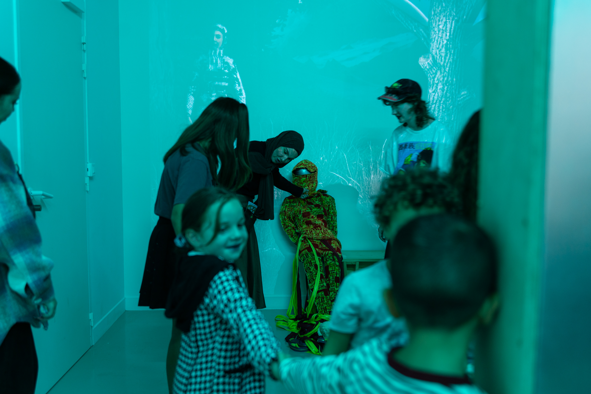
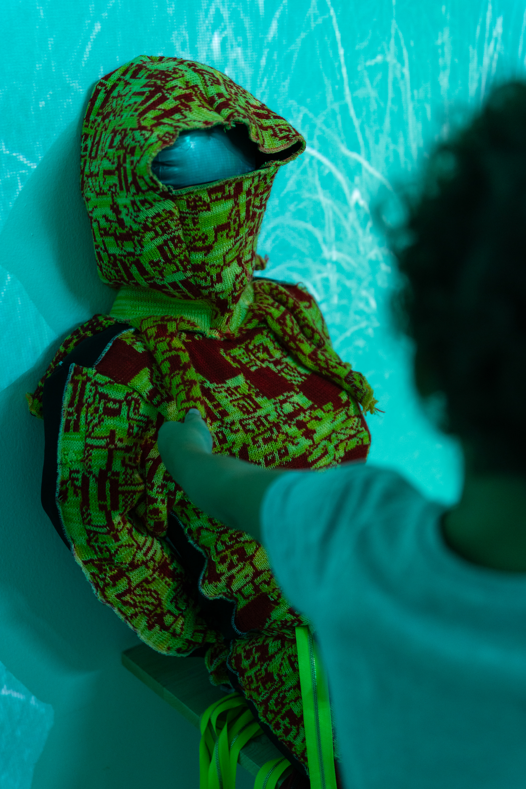
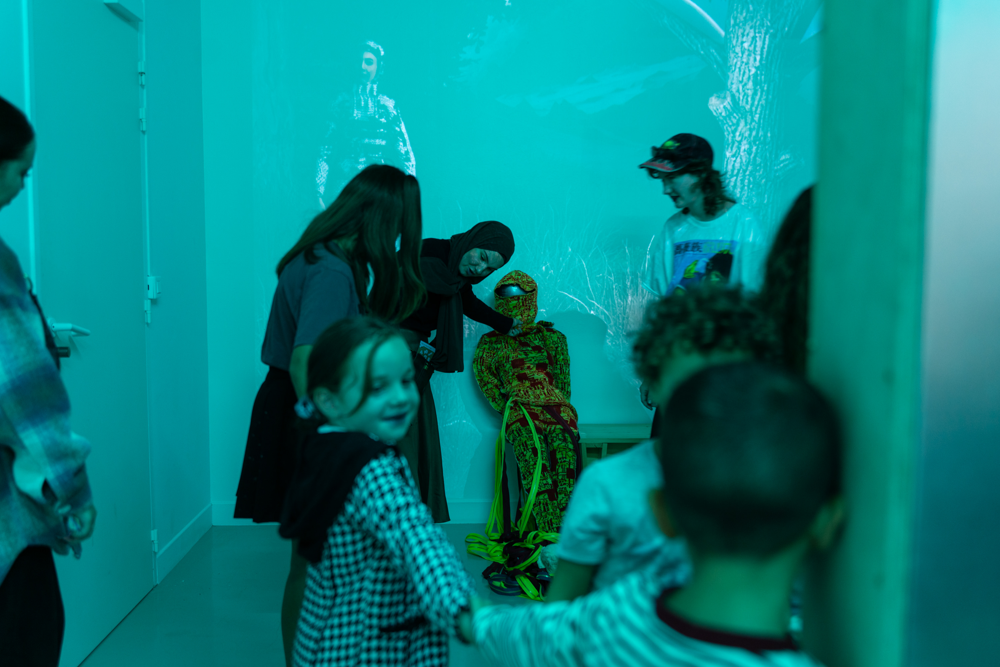


NATUREACULTUREA
Space Invasion - Unprecedented times
Fabienne Levy Gallery
2024
Exposition collective
« Les périodes sans précédent désignent des périodes ou des situations exceptionnellement uniques, sans exemple ni parallèle dans l’histoire. Ce terme est souvent utilisé pour décrire des événements ou des circonstances très inhabituels, imprévisibles et ayant des répercussions de grande envergure, ce qui les rend difficiles à gérer ou à comprendre sur la base d’expériences passées. Ils englobent des périodes marquées par des défis et des changements importants et inconnus, où les réponses traditionnelles peuvent être inadéquates et où des solutions innovantes sont souvent nécessaires. » L’alphabet de Bérénice Gaça Courtin sert de réceptacle à des messages cachés, mêlant des symbologies anciennes telles que la déesse slave du tissage « Mokosh ».
Webs Of Power, Part 1
Massana, Barcelone
2022
Tissages
Pour ce projet je me suis inspirée de l’histoire de mon grand-père pour créer mon propre code, de manère expérimentale que j’ai introduit dans des tissus fabriqués sur le métier à tisser numérique Jacquard (TC2). J’ai lié le métier Jacquard et la machine à écrire Enigma, car les deux seraient considérés comme les premiers ordinateurs, avec l’utilisation du code binaire. Le nom de mon projet est « Webs of Power : Weave resistance », qui provient du livre Webs of power : note from the global uprising de 1999, de l’écrivaine écoféministe Starhawk. Je fabriquais mes propres ligaments textiles en encodant l’alphabet avec des symboles, qui représentent mon propre parcours de résistance. J’ai été inspirée par des artistes comme l’artiste textile Ozella Mc Daniel Williams qui cachait la route des esclaves dans ses patchworks.


 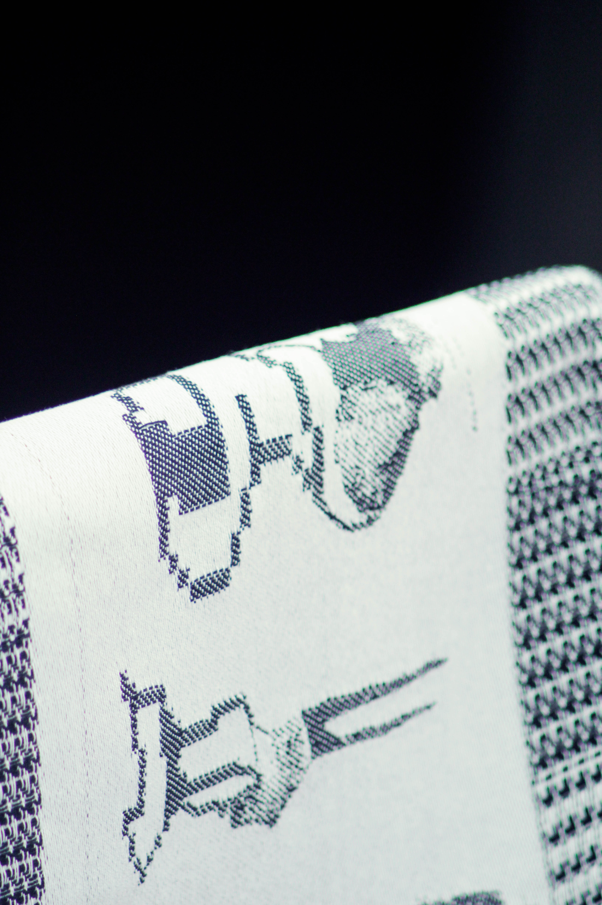
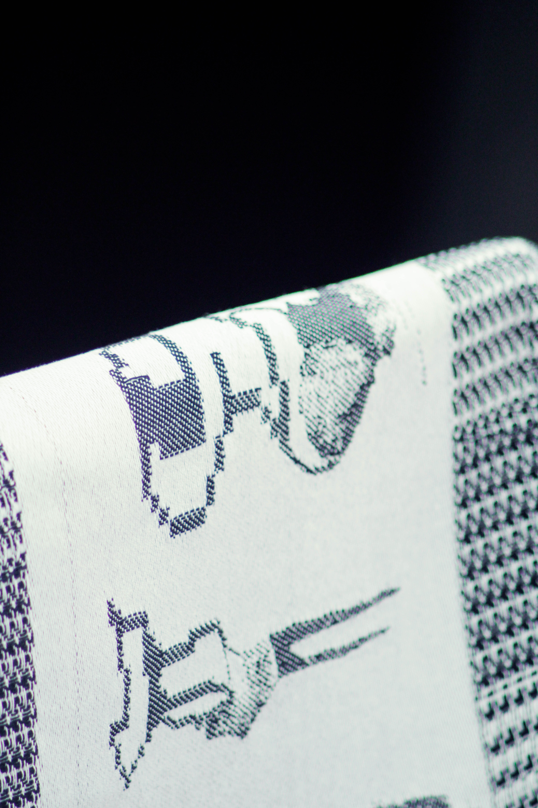
Webs Of Power, Part 3
Fabricademy, Lyon
2023
Vidéo et Costumes
C’est un court-metrage mêlant animation 3D et performance, ou les protagonistes content jouent a la fois des récits réels et fictifs. Les personnages sont les trois Nornes, qui sont représentées comme des personnages Scifi, mises en valeur par la tenue qu’elles portent. Ce qu’elles portent façonne leurs histoires dans un alphabet cryptique qui provient d’une interconnexion de lieux de résistance et de refuge. Les motifs sont des symboles qui matérialisent le monde numérique où elles vivent, là où le monde physique n’existe plus. Leur principal pouvoir est de recommencer à se matérialiser. Elles réapparaissent donc sur terre dans leur version physique, pour montrer la puissance de leur “toile”. Elles sont une nouvelle version des déesses mythologiques nordiques du tissage. Elles apparaissent comme des médiums dans différentes temporalités. Les mythes ont souvent été utilisés par les États et les autorités pour contrôler les sociétés, comme dans les religions ou les régimes de dictature. Ce mythe et l’opéra wagnérien du « Crépuscule des Dieux » ou « Gotterdammerung » a notamment été utilisé par Hitler pour l’obtenir en sa faveur. Mais ils font aussi partie des représentations civiles et leur interprétation nous permet de réinventer nos mythes contemporains. Ce projet fait partie du résultat de la Fabricademy, un programme liant Textiles et nouvelles technologies.
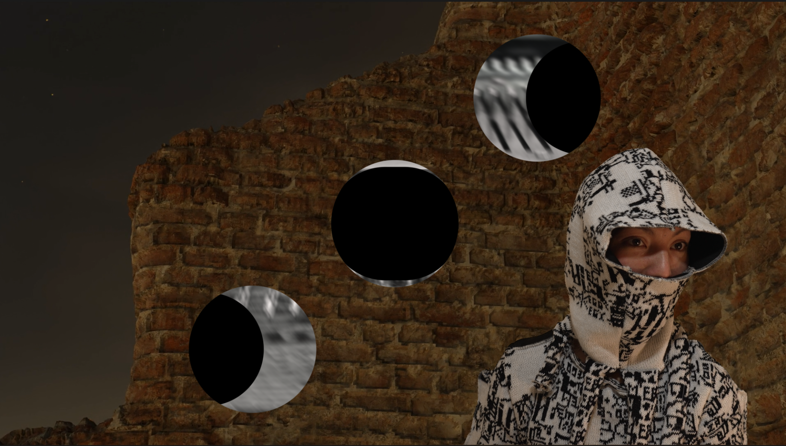 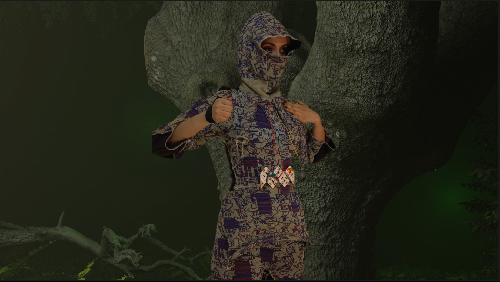 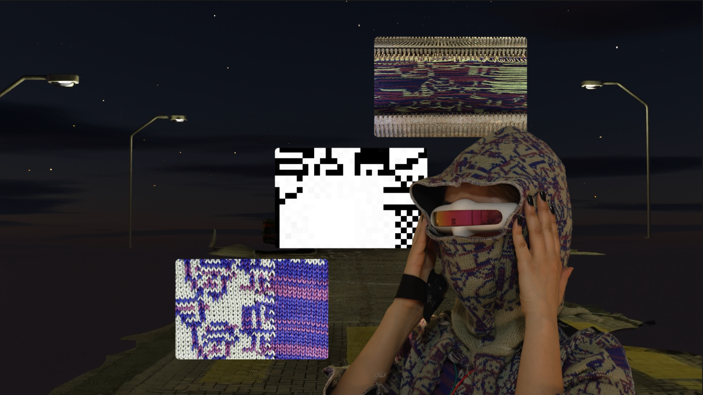 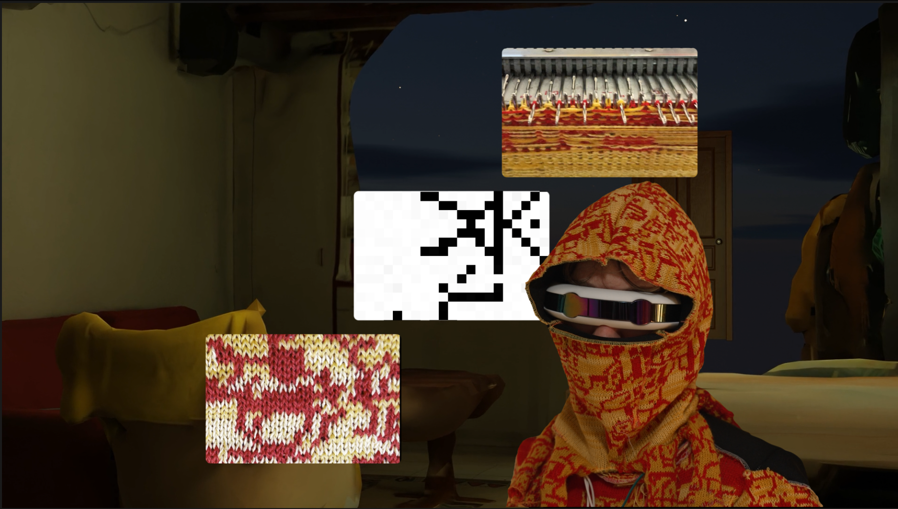 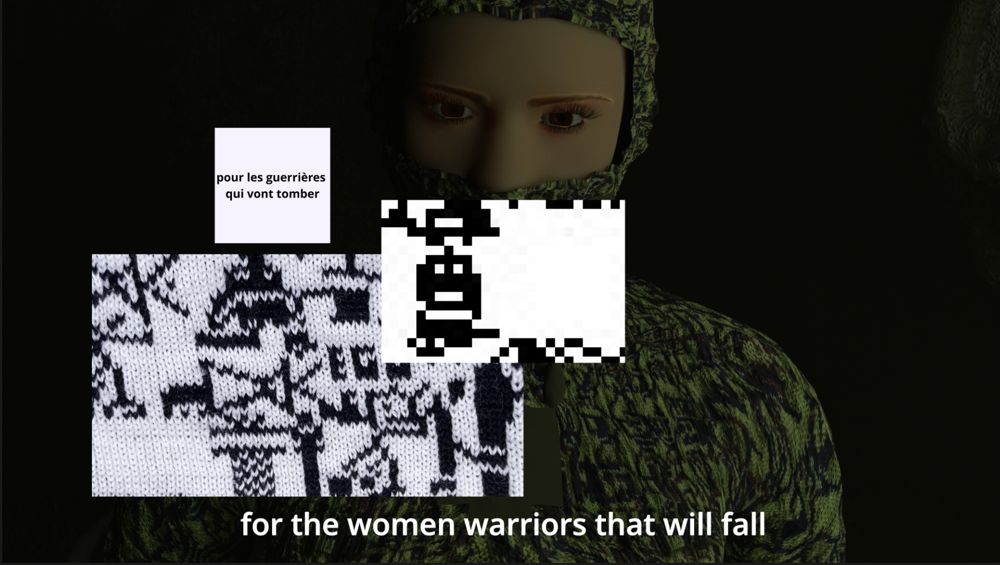
The Factory of Excess
Head, Geneva
2022
Performance
Cette proposition est une performance d’un mélange entre improvisation et chorégraphies, en continu, qui eu lieu sur plusieurs semaines, au sortir d’un workshop donné par la danseuse, chorégraphe et performeuse Alexandra Bachtezis dans la Section Inter-Action dans le département des Arts Visuels de la HEAD. “THE FACTORY OF EXCESS” est une création évolutive, ou nous travaillons sur les identités, les genres, les symboles, dans leur expression la plus excessive. Nous avions chacun.e des éléments symboliques sur lesquels nous travaillons individuellement, ainsi que des travaux de groupe et des interactions plurielles .

De-coded
CCCB, Barcelona
2021
Performance
Cette performance de cinéma expérimental raconte l’histoire de mon grand-père Kazimierz Gaca, dont le nom de code était Jacquin. Il travaillait avec d’autres cryptologues polonais, français, anglais et espagnols, décodant la machine Enigma pendant la Seconde Guerre mondiale. Cette recherche documentaireprovien de mes visites implique dans les zones ou ces résistants se seraient rendus et auraient œuvré. Notamment dans le Château des Fouzes, à Uzès en France, où ils ont trouvé asile et se sont cachés avec des résistants espagnols, durant la Seconde Guerre. Ayant fuit la Pologne fraîchement occupée et appelés à rejoindre le « PC Bruno », une installation secrète de renseignement des alliés, où ils ont réussi leur travail de cryptanalyse, ils se font capturer alors qu’ils tentaient de fuir la France. Kazimierz (sous le nom de Jacquin) fut alors envoyé au Camp de concentration de Sansenhausen, près de Berlin, où je me suis également rendue afin de demander des informations complémentaires. En effet, la recherche d’information
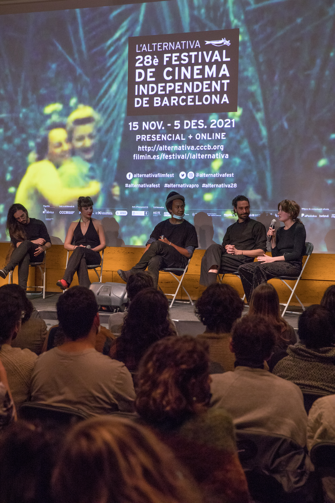 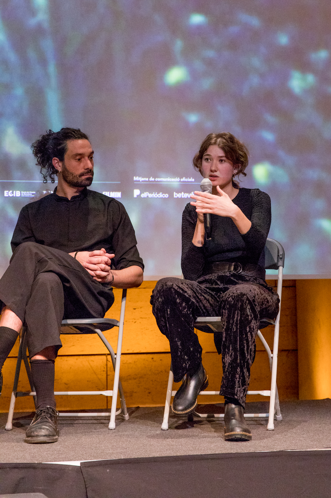